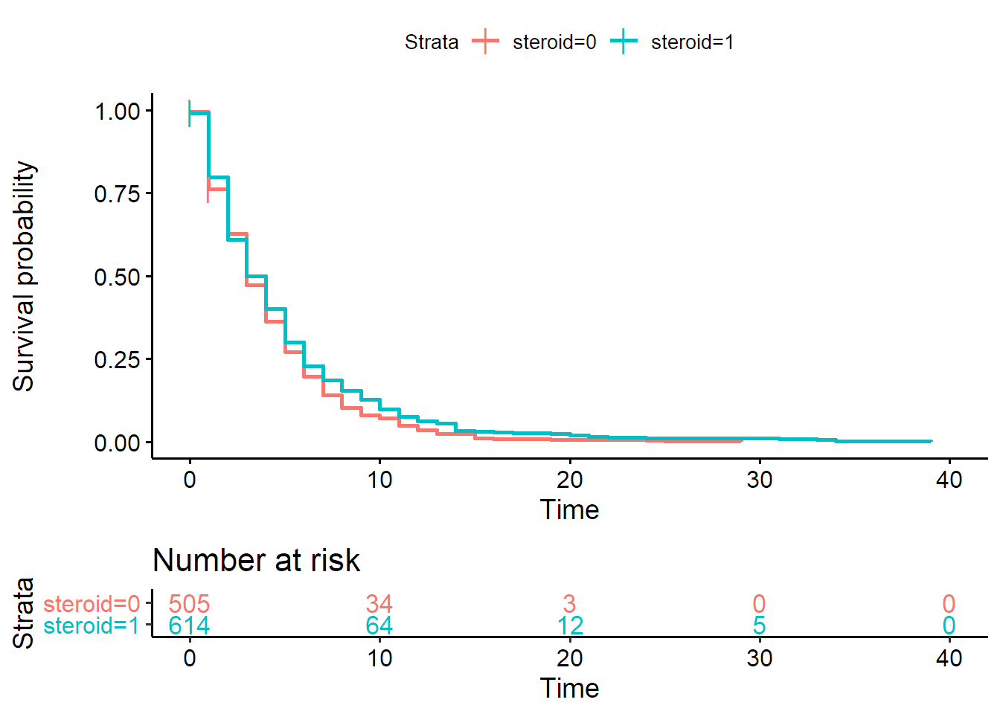
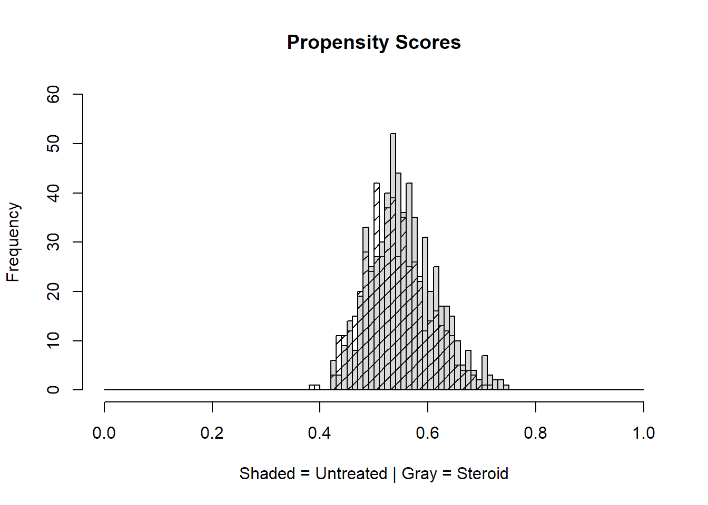
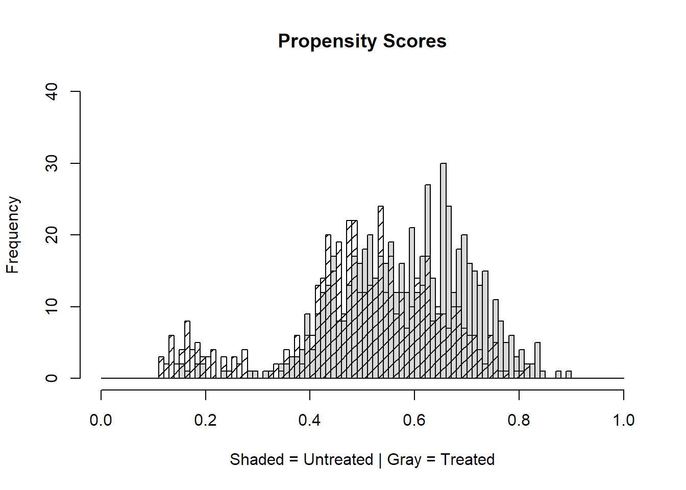
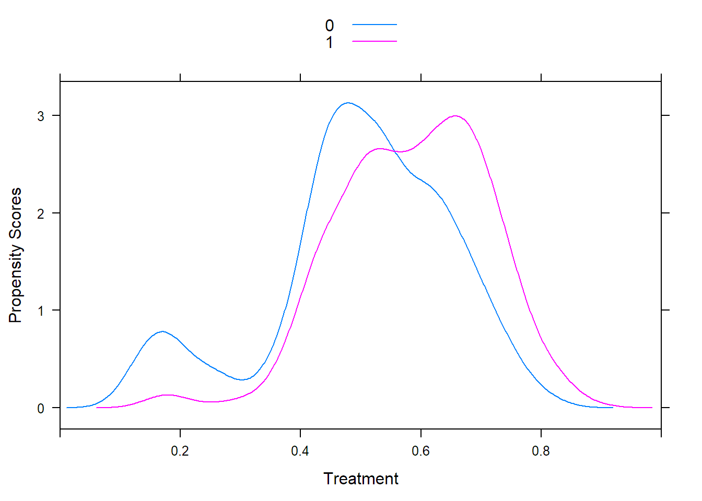

Rによる傾向スコア分析の実装２
後編
テーマ
- マルチレベルデータに対する生存時間解析
- マルチレベルデータに対する傾向スコアを用いた生存時間解析
前回用いたシミュレーションデータでは、マルチレベルデータを用いた傾向スコア法でも 結果が変わらなかった。 おそらくシミュレーションデータのためであろう。
今回はオープンアクセスデータを用いた実装を行う。
データは以下から引用した。
Citation Shiroshita, Akihiro (2020), Effectiveness of steroid therapy on pneumonic chronic obstructive pulmonary disease exacerbation: a multi-centred retrospective cohort study, v3, Dryad, Dataset, https://doi.org/10.5061/dryad.m63xsj3zd
データの読み込み
実際には上記のサイトより引用
データの確認
summary(copd)## id age gender steroid
## Min. : 1 Min. : 47.00 Min. :1.000 Min. :0.0000
## 1st Qu.: 310 1st Qu.: 74.00 1st Qu.:1.000 1st Qu.:0.0000
## Median : 619 Median : 80.00 Median :1.000 Median :1.0000
## Mean : 619 Mean : 79.27 Mean :1.099 Mean :0.5319
## 3rd Qu.: 928 3rd Qu.: 85.00 3rd Qu.:1.000 3rd Qu.:1.0000
## Max. :1237 Max. :105.00 Max. :2.000 Max. :1.0000
##
## hospital adl wheeze bun
## Min. :1.000 Min. :0.0000 Min. :0.0000 Min. : 1.00
## 1st Qu.:1.000 1st Qu.:1.0000 1st Qu.:0.0000 1st Qu.: 14.00
## Median :2.000 Median :1.0000 Median :0.0000 Median : 18.00
## Mean :2.032 Mean :0.8529 Mean :0.3112 Mean : 21.39
## 3rd Qu.:2.000 3rd Qu.:1.0000 3rd Qu.:1.0000 3rd Qu.: 25.00
## Max. :5.000 Max. :1.0000 Max. :1.0000 Max. :152.00
## NA's :11
## rr ams hr hot
## 24 :225 Min. :0.000 Min. : 30.0 Min. :0.0000
## 20 :151 1st Qu.:0.000 1st Qu.: 88.0 1st Qu.:0.0000
## 30 :106 Median :0.000 Median :101.0 Median :0.0000
## 28 : 80 Mean :0.159 Mean :101.3 Mean :0.2328
## 18 : 66 3rd Qu.:0.000 3rd Qu.:114.0 3rd Qu.:0.0000
## (Other):504 Max. :1.000 Max. :200.0 Max. :1.0000
## NA's :105 NA's :4 NA's :14
## stability time_to_stability death non_informative_cencoring
## Min. :0.0000 Min. : 0.000 Min. :0.0000 Min. :0
## 1st Qu.:1.0000 1st Qu.: 1.000 1st Qu.:0.0000 1st Qu.:0
## Median :1.0000 Median : 3.000 Median :0.0000 Median :0
## Mean :0.8351 Mean : 3.882 Mean :0.0671 Mean :0
## 3rd Qu.:1.0000 3rd Qu.: 5.000 3rd Qu.:0.0000 3rd Qu.:0
## Max. :1.0000 Max. :39.000 Max. :1.0000 Max. :0
##
## discharge intubation hospitalization
## Min. :0.0000 Min. :0.000000 Min. : 1.00
## 1st Qu.:1.0000 1st Qu.:0.000000 1st Qu.: 8.00
## Median :1.0000 Median :0.000000 Median : 12.00
## Mean :0.9289 Mean :0.007282 Mean : 16.97
## 3rd Qu.:1.0000 3rd Qu.:0.000000 3rd Qu.: 19.00
## Max. :1.0000 Max. :1.000000 Max. :200.00
## NA's :1str(copd)## 'data.frame': 1237 obs. of 19 variables:
## $ id : int 1 2 3 4 5 6 7 8 9 10 ...
## $ age : int 69 68 75 62 76 76 86 78 84 77 ...
## $ gender : int 1 1 1 1 1 1 1 1 1 2 ...
## $ steroid : int 1 1 1 1 1 1 1 0 1 0 ...
## $ hospital : int 5 5 5 5 5 5 5 5 5 5 ...
## $ adl : int 1 1 1 1 1 1 1 1 1 1 ...
## $ wheeze : int 1 0 0 1 1 1 1 0 0 1 ...
## $ bun : num 6.9 24.8 18.2 17.7 15.1 9.4 46.2 84.9 15.8 13.3 ...
## $ rr : Factor w/ 38 levels "","0","11","12",..: NA 23 18 26 23 7 11 19 15 19 ...
## $ ams : int 0 0 0 0 0 0 1 0 0 0 ...
## $ hr : int 105 160 120 90 104 126 93 101 110 64 ...
## $ hot : int 1 1 0 0 1 1 1 1 1 0 ...
## $ stability : int 1 1 0 1 0 1 0 0 1 1 ...
## $ time_to_stability : int 3 6 0 10 0 1 0 0 4 19 ...
## $ death : int 0 0 0 0 0 0 0 0 0 0 ...
## $ non_informative_cencoring: int 0 0 0 0 0 0 0 0 0 0 ...
## $ discharge : int 1 1 1 1 1 1 1 1 1 1 ...
## $ intubation : int 0 0 0 0 0 0 0 0 0 0 ...
## $ hospitalization : int 9 23 22 12 18 21 8 2 10 30 ...データ整形
- rrは離散値をとる数値型のはずが、因子型になっている。
- のちのためにも変換が必要
- 同じく従属変数も数値型へ変換
copd$rr <- as.numeric(copd$rr)
str(copd$rr)## num [1:1237] NA 23 18 26 23 7 11 19 15 19 ...# 従属変数の変換
copd$stability <- as.numeric(copd$stability)
str(copd$stability)## num [1:1237] 1 1 0 1 0 1 0 0 1 1 ...# 時間変数も数値型へ変換
copd$time_to_stability <- as.numeric(copd$time_to_stability)
str(copd$time_to_stability)## num [1:1237] 3 6 0 10 0 1 0 0 4 19 ...数値型になったことを確認できた。
データの概要
元論文より引用
日本のデータで５施設からの多施設後ろ向きコホート研究
ステロイド投与が慢性閉塞性肺疾患に与える影響を調べた1237人のデータ,19変数
＜変数名＞ id: anonimized patients’ ID,
age: patients’ age on hospitalization,
gender: 1=male, 2=female,
steroid: steroid use (0=not, 1=steroid use),
hospital: categorized hospital name (1-5まで病院コード),
adl: activity daily living before hospitalization (0: full support, 1: not full support),
wheeze: wheezing lung sound on admission (0:not, 1:wheezing lung sound),
bun: blood urea nitrogen (mg/dL),
rr: respiratory rate (/minute),
ams: altered mental status (0=not, 1=altered mental status),
hr: heart rate (/minute),
hot: home oxygen therapy use before hospitalization (0=not, 1=users),
insulin: new insuline users during hospitalization (0=not, 1=new users),
delirium: clinical diagnosis of delirium during hospitalization (0=not, 1=delirium),
stability: reaching the clinical stability (0=not, 1=reached clinical stability),
time_to_stability: time to clinical stability (days),
death:in-hospital death,
non-informative_censoring: non-informative censoring (0=not, 1=noninformative censoring),
discharge (0=not, 1=discharged patients),
intubation: tracheal
intubation during hospitalization (0=not, 1=intubated),
hospitalization=length of stay (days)
＜アウトカム＞ stability：臨床的安定の達成
＜曝露＞ steroid:ステロイド使用の有無
今回考え得るモデル
- Complete case analysis + 多変量生存時間解析 with/without マルチレベル分析
- Complete case analysis + 傾向スコア + 生存時間解析 with/without マルチレベル分析
- 多重代入による欠損値処理 + 傾向スコア + 生存時間解析 with/without マルチレベル分析
Complete case analysis:その1
欠損値への対処がやっかいなのでまずはcomplete case analysisを行う。
# na.omitは欠損値を除く関数
copd_ca <- na.omit(copd)データの概要
summary(copd_ca)## id age gender steroid
## Min. : 2.0 Min. : 47.00 Min. :1.000 Min. :0.0000
## 1st Qu.: 340.5 1st Qu.: 74.00 1st Qu.:1.000 1st Qu.:0.0000
## Median : 640.0 Median : 80.00 Median :1.000 Median :1.0000
## Mean : 634.2 Mean : 79.44 Mean :1.097 Mean :0.5487
## 3rd Qu.: 940.5 3rd Qu.: 85.00 3rd Qu.:1.000 3rd Qu.:1.0000
## Max. :1237.0 Max. :105.00 Max. :2.000 Max. :1.0000
## hospital adl wheeze bun
## Min. :1.000 Min. :0.0000 Min. :0.0000 Min. : 1.00
## 1st Qu.:1.000 1st Qu.:1.0000 1st Qu.:0.0000 1st Qu.: 14.00
## Median :2.000 Median :1.0000 Median :0.0000 Median : 18.00
## Mean :1.974 Mean :0.8517 Mean :0.3208 Mean : 21.37
## 3rd Qu.:2.000 3rd Qu.:1.0000 3rd Qu.:1.0000 3rd Qu.: 25.00
## Max. :5.000 Max. :1.0000 Max. :1.0000 Max. :152.00
## rr ams hr hot
## Min. : 1.00 Min. :0.0000 Min. : 30.0 Min. :0.0000
## 1st Qu.:11.00 1st Qu.:0.0000 1st Qu.: 88.5 1st Qu.:0.0000
## Median :15.00 Median :0.0000 Median :101.0 Median :0.0000
## Mean :15.42 Mean :0.1609 Mean :101.4 Mean :0.2315
## 3rd Qu.:19.00 3rd Qu.:0.0000 3rd Qu.:114.0 3rd Qu.:0.0000
## Max. :38.00 Max. :1.0000 Max. :200.0 Max. :1.0000
## stability time_to_stability death non_informative_cencoring
## Min. :0.0000 Min. : 0.00 Min. :0.00000 Min. :0
## 1st Qu.:1.0000 1st Qu.: 1.00 1st Qu.:0.00000 1st Qu.:0
## Median :1.0000 Median : 3.00 Median :0.00000 Median :0
## Mean :0.8329 Mean : 3.86 Mean :0.06702 Mean :0
## 3rd Qu.:1.0000 3rd Qu.: 5.00 3rd Qu.:0.00000 3rd Qu.:0
## Max. :1.0000 Max. :39.00 Max. :1.00000 Max. :0
## discharge intubation hospitalization
## Min. :0.0000 Min. :0.000000 Min. : 1.00
## 1st Qu.:1.0000 1st Qu.:0.000000 1st Qu.: 8.00
## Median :1.0000 Median :0.000000 Median : 12.00
## Mean :0.9285 Mean :0.007149 Mean : 16.96
## 3rd Qu.:1.0000 3rd Qu.:0.000000 3rd Qu.: 19.00
## Max. :1.0000 Max. :1.000000 Max. :200.00nrow(copd_ca)## [1] 1119欠損値はすべてなくなり、1119例となっていることが分かる。
式の作成
共変量設定
covariateNames_ca <-
c("gender",#性別
"age",#年齢
"hot", #在宅酸素療法の有無
"adl",#ADL
"rr", #呼吸数
"ams", # 意識状態
"hr", #心拍数
"bun" #BUN
#著者らは先行研究に基づいて決定
)生存時間解析
カプランマイヤー法で評価
library(survival)
library(survminer)
library(ggplot2)sv_result <- survfit(Surv(copd_ca$time_to_stability,copd_ca$stability) ~ copd_ca$steroid)ggsurvplot(sv_result, data = copd_ca, censor.shape = "|",risk.table = TRUE,risk.table.col = "strata")## Warning: Vectorized input to `element_text()` is not officially supported.
## Results may be unexpected or may change in future versions of ggplot2.
比例ハザード性は判断が難しい。
ログランク検定
survdiff(Surv(copd_ca$time_to_stability,copd_ca$stability) ~ copd_ca$steroid)## Call:
## survdiff(formula = Surv(copd_ca$time_to_stability, copd_ca$stability) ~
## copd_ca$steroid)
##
## N Observed Expected (O-E)^2/E (O-E)^2/V
## copd_ca$steroid=0 505 428 401 1.76 3.99
## copd_ca$steroid=1 614 504 531 1.33 3.99
##
## Chisq= 4 on 1 degrees of freedom, p= 0.05結果はp value = 0.05 とこちらも微妙…
そもそもとしてCoxの比例ハザードモデルを考えてよいかが問題となってくる。
元論文では競合リスクを考慮した解析を行っている。
一応ここでは通常のCox比例ハザードモデルを行う。
ここからモデル作成を行う
モデル1-1:random効果を無視した生存時間解析(通常の多変量比例ハザードモデル)
ここから解析を行う.
ここでのステロイドの治療は施設ごとでも差がないとの仮定に基づいている。
library(survival)
model_ca_nm <- coxph(data = copd_ca, Surv(time_to_stability,stability) ~ steroid + age + gender + hot + adl + ams + rr + hr + bun)係数の確認
summary(model_ca_nm)## Call:
## coxph(formula = Surv(time_to_stability, stability) ~ steroid +
## age + gender + hot + adl + ams + rr + hr + bun, data = copd_ca)
##
## n= 1119, number of events= 932
##
## coef exp(coef) se(coef) z Pr(>|z|)
## steroid -0.1205477 0.8864348 0.0667505 -1.806 0.07093 .
## age 0.0143903 1.0144943 0.0044923 3.203 0.00136 **
## gender -0.2421026 0.7849756 0.1143233 -2.118 0.03420 *
## hot 0.2456815 1.2784923 0.0801850 3.064 0.00218 **
## adl -0.0329088 0.9676268 0.1013175 -0.325 0.74533
## ams -0.0594581 0.9422750 0.0995337 -0.597 0.55026
## rr -0.0171500 0.9829962 0.0060550 -2.832 0.00462 **
## hr -0.0004657 0.9995344 0.0018423 -0.253 0.80043
## bun -0.0071899 0.9928359 0.0034794 -2.066 0.03879 *
## ---
## Signif. codes: 0 '***' 0.001 '**' 0.01 '*' 0.05 '.' 0.1 ' ' 1
##
## exp(coef) exp(-coef) lower .95 upper .95
## steroid 0.8864 1.1281 0.7777 1.0103
## age 1.0145 0.9857 1.0056 1.0235
## gender 0.7850 1.2739 0.6274 0.9821
## hot 1.2785 0.7822 1.0926 1.4961
## adl 0.9676 1.0335 0.7934 1.1802
## ams 0.9423 1.0613 0.7753 1.1453
## rr 0.9830 1.0173 0.9714 0.9947
## hr 0.9995 1.0005 0.9959 1.0032
## bun 0.9928 1.0072 0.9861 0.9996
##
## Concordance= 0.581 (se = 0.012 )
## Likelihood ratio test= 41.23 on 9 df, p=5e-06
## Wald test = 40.77 on 9 df, p=6e-06
## Score (logrank) test = 40.88 on 9 df, p=5e-06round(exp(confint(model_ca_nm)),3)## 2.5 % 97.5 %
## steroid 0.778 1.010
## age 1.006 1.023
## gender 0.627 0.982
## hot 1.093 1.496
## adl 0.793 1.180
## ams 0.775 1.145
## rr 0.971 0.995
## hr 0.996 1.003
## bun 0.986 1.000round(exp(coefficients(model_ca_nm)),3)## steroid age gender hot adl ams rr hr bun
## 0.886 1.014 0.785 1.278 0.968 0.942 0.983 1.000 0.993ステロイドの使用はHR 0.886 (95%CI 0.778 - 1.010)
状態安定に影響を与えるとは言えない結果であった。
(イベントが状態がよい=1のためHRが1を超えると状態を安定させる方向)
モデル1-2:random効果を考慮したモデル
# GLMMで扱うパッケージ
library(lme4)
model_ca_ri <- coxme::coxme(data = copd_ca, Surv(time_to_stability,stability) ~ steroid + age + gender + hot + adl + ams + rr + hr + bun + (1|hospital))最後の(1|hospital)が施設ごとに切片が違うことを表している。
# 結果の確認
summary(model_ca_ri)## Cox mixed-effects model fit by maximum likelihood
## Data: copd_ca
## events, n = 932, 1119
## Iterations= 5 23
## NULL Integrated Fitted
## Log-likelihood -5446.863 -5416.35 -5410.778
##
## Chisq df p AIC BIC
## Integrated loglik 61.03 10.00 2.3152e-09 41.03 -7.35
## Penalized loglik 72.17 12.29 1.6582e-10 47.58 -11.89
##
## Model: Surv(time_to_stability, stability) ~ steroid + age + gender + hot + adl + ams + rr + hr + bun + (1 | hospital)
## Fixed coefficients
## coef exp(coef) se(coef) z p
## steroid -0.1891431726 0.8276680 0.069411572 -2.72 0.0064
## age 0.0114649558 1.0115309 0.004530116 2.53 0.0110
## gender -0.2397071791 0.7868582 0.114585337 -2.09 0.0360
## hot 0.2924630311 1.3397232 0.080883780 3.62 0.0003
## adl 0.0318516716 1.0323644 0.102796189 0.31 0.7600
## ams -0.0956917165 0.9087441 0.101592480 -0.94 0.3500
## rr -0.0174388264 0.9827123 0.006113988 -2.85 0.0043
## hr -0.0002423059 0.9997577 0.001846803 -0.13 0.9000
## bun -0.0075758979 0.9924527 0.003531128 -2.15 0.0320
##
## Random effects
## Group Variable Std Dev Variance
## hospital Intercept 0.23398785 0.05475031round(exp(confint(model_ca_ri)),3)## 2.5 % 97.5 %
## steroid 0.722 0.948
## age 1.003 1.021
## gender 0.629 0.985
## hot 1.143 1.570
## adl 0.844 1.263
## ams 0.745 1.109
## rr 0.971 0.995
## hr 0.996 1.003
## bun 0.986 0.999round(exp(coefficients(model_ca_ri)),3)## steroid age gender hot adl ams rr hr bun
## 0.828 1.012 0.787 1.340 1.032 0.909 0.983 1.000 0.992ランダム切片モデルで考えると＜曝露＞ステロイドの使用は有意であった。
今回は臨床的な病態安定の達成をイベントとして1とカウントしている。
HR 0.83ということはむしろ安定させない方向に働くと考えられる。
モデル1-2:切片のチェック
library(lme4)
ranef(model_ca_ri)## $hospital
## 1 2 3 4 5
## 0.02903655 0.29990271 -0.01872156 -0.01416696 -0.29605075病院別のランダム切片の値を確認するとそれぞればらつきがあることが分かる。
病院1,2の方が基本イベント達成しやすい傾向があるようだ。
この辺りは病院による何らかの特性の違いを反映していると考えられる。
しかし、そもそもageや在宅酸素が正の値をとっていることから
年齢が高くなる、在宅酸素をしていると病態が安定するという結果になる。
臨床的な感覚からすると矛盾であり、データの妥当性やモデルの妥当性を含めて検証が必要かもしれない。
model2-1:傾向スコア + ランダム効果を無視
まずクラスター効果を無視した傾向スコアを算出する。
治療指標の作成
今後の便利のためsteroidとは別に治療指標という変数を作成する、治療指標は因子型としておく
copd_ca$treated <- as.factor(copd_ca$steroid)連続予測子の標準化
#標準化された連続予測子
for (var in covariateNames_ca) {
if (class(copd_ca[,var])!="factor") { copd_ca[,var] = (copd_ca[,var]-mean(copd_ca[,var]))/sd(copd_ca[,var]) } }傾向スコアの推定
#ロジスティック回帰モデルの式の作成
ps.formula0 <- paste(covariateNames_ca, collapse="+")
ps.formula0 <- formula(paste("treated~",ps.formula0))
print(ps.formula0)## treated ~ gender + age + hot + adl + rr + ams + hr + bun#クラスタリングを無視した傾向スコアの推定
ps.model0 <- glm(ps.formula0, data = copd_ca, family=binomial)
#クラスタリングを無視した傾向スコアを得る
copd_ca$ps0 <- fitted(ps.model0)共通指示の評価(傾向スコアの分布にばらつきがないか)
hist(copd_ca$ps0[copd_ca$treated==0], density = 10, angle = 45, main="Propensity Scores",
breaks=seq(0,1,by=0.01),
xlim=c(0,1), ylim=c(0,60), xlab="Shaded = Untreated | Gray = Steroid")
hist(copd_ca$ps0[copd_ca$treated==1], col=gray(0.4,0.25), breaks=seq(0,1,by=0.01),
xlim=c(0,1), ylim=c(0,60),add=T) 
傾向スコアの分布は同じくらいであることが分かる。
ATEの推定
今回の興味は試験に参加した全集団にステロイド使用した場合の平均因果効果である。
# 重みの計算
copd_ca$psw0 <- with(copd_ca, ifelse(treated==1, 1/ps0, 1/(1-ps0)))
#重みの正規化
copd_ca$psw0 <- copd_ca$psw0/mean(copd_ca$psw0)
# 統合
with(copd_ca, by(psw0, steroid, summary))## steroid: 0
## Min. 1st Qu. Median Mean 3rd Qu. Max.
## 0.8188 1.0006 1.0756 1.1079 1.1847 1.7251
## ------------------------------------------------------------
## steroid: 1
## Min. 1st Qu. Median Mean 3rd Qu. Max.
## 0.6717 0.8418 0.9100 0.9112 0.9720 1.1853両群のバランス評価
傾向スコアで調整するにあたり、曝露群と非曝露群でバランスがとれているかの評価が必要
まずはベースラインでの評価を行う
require(twang)
baseline.balance0 <- bal.stat(data=copd_ca,#dataset
var=covariateNames_ca,#list of the variables to be included in the balance check
treat.var="treated",#treatment assignment variable
w.all=1,#define weights equal to 1 (no weighting)
sampw=1,#define the sampling weights (no weighting)
get.means=T, #compute means and variances
get.ks=F,#overwrite the default for obtaining KS statistic
estimand="ATE",#specify the estimand of interest
multinom=F)#underline that multinomial ps are not used
baseline.balance.es <- baseline.balance0$results
summary(abs(baseline.balance.es$std.eff.sz))## Min. 1st Qu. Median Mean 3rd Qu. Max.
## 0.02125 0.03662 0.04553 0.07668 0.12321 0.18266標準化効果量は最大で0.18266とバランスがとれていない項目があることが分かる。
続いて傾向スコアで重みづけした後のバランス評価を行う。
psw.balance0 <- bal.stat(data=copd_ca,#dataset
var=covariateNames_ca,#list of the variables to be included in the balance check
treat.var="treated",#treatment assignment variable
w.all=copd_ca$psw0,#define the overall weights
sampw=1,#define the sampling weights
get.means=T, #compute means and variances
get.ks=F,#overwrite the default for obtaining KS statistic
estimand="ATE",#specify the estimand of interest
multinom=F)#underline that multinomial ps are not used
psw.balance.table0 <- psw.balance0$results
summary(abs(psw.balance.table0$std.eff.sz))## Min. 1st Qu. Median Mean 3rd Qu. Max.
## 0.0001159 0.0008443 0.0025712 0.0019355 0.0027109 0.0033863標準効果量の最大値は0.0033863であり両群でバランスがとれていることが分かる。
生存時間解析
library(hrIPW)
model_ca_ps <- coxph(data = copd_ca, Surv(time_to_stability,stability) ~ treated, weights = psw0, robust = TRUE)結果確認
summary(model_ca_ps)## Call:
## coxph(formula = Surv(time_to_stability, stability) ~ treated,
## data = copd_ca, weights = psw0, robust = TRUE)
##
## n= 1119, number of events= 932
##
## coef exp(coef) se(coef) robust se z Pr(>|z|)
## treated1 -0.11933 0.88752 0.06591 0.06498 -1.836 0.0663 .
## ---
## Signif. codes: 0 '***' 0.001 '**' 0.01 '*' 0.05 '.' 0.1 ' ' 1
##
## exp(coef) exp(-coef) lower .95 upper .95
## treated1 0.8875 1.127 0.7814 1.008
##
## Concordance= 0.509 (se = 0.011 )
## Likelihood ratio test= 3.28 on 1 df, p=0.07
## Wald test = 3.37 on 1 df, p=0.07
## Score (logrank) test = 3.28 on 1 df, p=0.07, Robust = 3.44 p=0.06
##
## (Note: the likelihood ratio and score tests assume independence of
## observations within a cluster, the Wald and robust score tests do not).round(exp(confint(model_ca_ps)),3)## 2.5 % 97.5 %
## treated1 0.781 1.008round(exp(coefficients(model_ca_ps)),3)## treated1
## 0.888ロバスト推定した場合：HR 0.888、95%CI: 0.781 - 1.008で有意にはならなかった。
model2-2:傾向スコア + ランダム効果を含む
2-1.マルチレベルロジスティック回帰モデル式の作成
ps.formula <- paste(covariateNames_ca, collapse="+")
# 今回はクラスター効果を示す変数がはいっている
ps.formula <- formula(paste("steroid~",ps.formula,"+ (1|hospital)"))2-2.ランダム切片によるマルチレベルロジスティック回帰
#ランダム切片によるマルチレベルモデル
ps.model <- glmer(formula = ps.formula, family = binomial, data = copd_ca,
#it was necessary to use the "control" argument to obtain convergence
#by chaing the optimizer and increasing the number of iterations
control=glmerControl(optimizer="bobyqa",optCtrl=list(maxfun=2e5)))
#使用する非線形オプティマイザや非線形オプティマイザに渡すパラメータなどの制御パラメータを含むリスト2-3. 傾向スコアを得る
#傾向スコアを得
copd_ca$ps=fitted(ps.model) ##extract the model estimated propensity scores
with(copd_ca, by(ps, treated, summary))## treated: 0
## Min. 1st Qu. Median Mean 3rd Qu. Max.
## 0.1112 0.4352 0.5142 0.5025 0.6093 0.8183
## ------------------------------------------------------------
## treated: 1
## Min. 1st Qu. Median Mean 3rd Qu. Max.
## 0.1520 0.5002 0.5943 0.5867 0.6771 0.89202-4. 共通支持を評価
hist(copd_ca$ps[copd_ca$treated==0], density = 10, angle = 45, main="Propensity Scores",
breaks=seq(0,1,by=0.01),
xlim=c(0,1), ylim=c(0,40), xlab="Shaded = Untreated | Gray = Treated")
hist(copd_ca$ps[copd_ca$treated==1], col=gray(0.4,0.25), breaks=seq(0,1,by=0.01),
xlim=c(0,1), ylim=c(0,40),add=T) 
傾向スコアのばらつきはあるが重なりは同じくらいであることが分かる
傾向スコアのカーネル密度推定
densityplot( ~ ps, groups=steroid, plot.points=F, xlim=c(0,1),
data = copd_ca, ylab = "Propensity Scores", xlab = "Treatment",auto.key = TRUE)
2-5. ATEの推定
今回も興味は試験に参加した全集団でのステロイドの因果効果である。
# 重みの計算
copd_ca$psw <- with(copd_ca, ifelse(treated==1, 1/ps, 1/(1-ps)))
#重みの正規化
copd_ca$psw <- copd_ca$psw/mean(copd_ca$psw)
# 統合
with(copd_ca, by(psw, steroid, summary))## steroid: 0
## Min. 1st Qu. Median Mean 3rd Qu. Max.
## 0.5665 0.8914 1.0364 1.1085 1.2888 2.7716
## ------------------------------------------------------------
## steroid: 1
## Min. 1st Qu. Median Mean 3rd Qu. Max.
## 0.5645 0.7436 0.8472 0.9108 1.0067 3.3119psw.balance <- bal.stat(data=copd_ca,#dataset
var=covariateNames_ca,#list of the variables to be included in the balance check
treat.var="treated",#treatment assignment variable
w.all=copd_ca$psw,#define the overall weights
sampw=1,#define the sampling weights
get.means=T, #compute means and variances
get.ks=F,#overwrite the default for obtaining KS statistic
estimand="ATE",#specify the estimand of interest
multinom=F)#underline that multinomial ps are not used
psw.balance.table <- psw.balance$results
summary(abs(psw.balance.table$std.eff.sz))## Min. 1st Qu. Median Mean 3rd Qu. Max.
## 0.001953 0.004157 0.006546 0.006607 0.008396 0.011965最大でも標準効果量が0.1未満であり両群のバランスは保たれている。
model_ca_psw <- coxph(data = copd_ca, Surv(time_to_stability,stability) ~ treated, weights = psw, robust = TRUE)結果確認
summary(model_ca_psw)## Call:
## coxph(formula = Surv(time_to_stability, stability) ~ treated,
## data = copd_ca, weights = psw, robust = TRUE)
##
## n= 1119, number of events= 932
##
## coef exp(coef) se(coef) robust se z Pr(>|z|)
## treated1 -0.18572 0.83051 0.06618 0.06887 -2.697 0.007 **
## ---
## Signif. codes: 0 '***' 0.001 '**' 0.01 '*' 0.05 '.' 0.1 ' ' 1
##
## exp(coef) exp(-coef) lower .95 upper .95
## treated1 0.8305 1.204 0.7256 0.9505
##
## Concordance= 0.521 (se = 0.011 )
## Likelihood ratio test= 7.87 on 1 df, p=0.005
## Wald test = 7.27 on 1 df, p=0.007
## Score (logrank) test = 7.9 on 1 df, p=0.005, Robust = 7.45 p=0.006
##
## (Note: the likelihood ratio and score tests assume independence of
## observations within a cluster, the Wald and robust score tests do not).round(exp(confint(model_ca_psw)),3)## 2.5 % 97.5 %
## treated1 0.726 0.951round(exp(coefficients(model_ca_psw)),3)## treated1
## 0.831HR 0.831, 95%CI:0.726 - 0.951
施設のランダム効果を考慮して傾向スコアを算出し、ATEを推定して生存時間解析を行うと結果は有意であった。
結果のまとめ
今回の結果では、クラスター効果を無視した解析を行うと興味のある曝露の効果は有意とはならず、
クラスター効果を考慮した解析を行うと有意になった。
傾向スコアを推定した場合としていない場合とでは点推定値および信頼区間には大きな差はなかった。
##【reference】
- Citation Shiroshita, Akihiro (2020), Effectiveness of steroid therapy on pneumonic chronic obstructive pulmonary disease exacerbation: a multi-centred retrospective cohort study, v3, Dryad, Dataset, https://doi.org/10.5061/dryad.m63xsj3zd
Fan Li, Alan M Zaslavsky, Mary Beth Landrum Propensity socre weighing with multilevel data. Stat Med. 2013.30;32(19):3373 - 87.
P.Austin Variance estimation when using inverse probability of treatment weighting with survival analysis. Stat Med. 2016.35(30):5642 - 55.